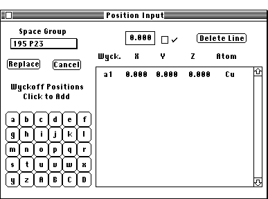

Wyckoff Position Dialog Box:
PATH...Parameter Menu:Define Unit Cells:Unit Cell Dialog Box:(Wyckoff Pos.)
The Wyckoff Position Dialog Box allows the user to define atomic
positions using the Wyckoff generators (Point Set). These generators are
listed in the International Tables of Crystallography and can be viewed
using the Space Group Tables option found under the Edit menu. .i.Space
Group:Tables;
The Wyckoff Position Dialog Box is entered by pressing the Wyckoff Pos.
button while in the Crystal Definition Dialog
box.

Wyckoff Positions Dialog Box
The Wyckoff Positions:Space Group; pop-up menu contains a list of the
appropriate space groups for the crystal family selected in the Crystal
Definition Dialog Box. Select the desired space group and the correct letters
will be highlighted in the Wyckoff Calculator.
For the selected space group, the appropriate Wyckoff Positions are indicated
by the highlighted letter. Clicking on a letter will cause the corresponding
Wyckoff Position atom to be entered in the the Wyckoff atom list.
Use the editable text box to enter the correct x,y,z and element type. The
Wyckoff Positions:Delete Line button will delete the active text
line (the line which has some text highlighted). If the exact Wyckoff position
is not known, the x,y,z values for the general position may be entered.
The general position is the highest activated alphanumeric. Desktop Microscopist
will automatically eliminate any positional redundancies.
- NOTES:
- It is possible to go immediately to the Wyckoff Positions after
selecting the correct crystal family. It is not necessary to set the total
number of atoms prior to using the Wyckoff Positions.
- Clicking on Replace will delete all currently defined atoms and
subtract any excess or duplicate atoms. in the Crystal Definition Dialog
Box.
- If the given Wyckoff Position requires a variable (designated as
x,y,z in the Space Group tables), THE CORRECT VALUE MUST BE INSERTED. If
there are questions, either go to the latest issue of the International
Tables (Vol. A) or refer to the abbreviated tables in this program.
- To add specific atoms not based on symmetry, to change specific
positions or elements use the Crystal Definition
Dialog Box independent of the Wyckoff Positions.
- Use the Delete button to delete unneeded Wyckoff Positions.
- If,the user is not sure of the exact Wyckoff Position. Select the
general position, (the highest alpha value, in this case 'o') and type in
the given values for the atomic position. Upon clicking the replace button,
Desktop will eliminate any redundant atoms and generate the unit cell.
Author: J.ames T.
Stanley
 Desktop
Manual:Dialog Boxes
Desktop
Manual:Dialog Boxes
Distributed By: Virtual Labs
Last Updated:June 26,1996